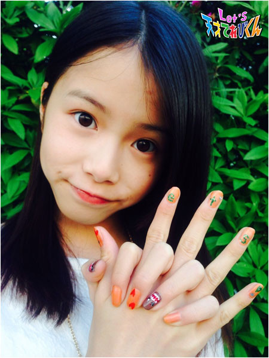

<<2014年4月 | トップページ | 2014年6月>>
2014年5月
未来の自分！［赤崎月香］
こんにちはヽ(^▽^@)ノ
赤崎月香（あかさき つきか）です。
陸上部に入部しました。(*￣0￣*)ノ
練習前にアップをします。
やり方を教えてもらっても、リズム感がなくて
どうしてもリズムよくできません。
みんなに笑われます・・・
家族にも笑われました・・・
へこみます・・・
自分でも笑ってしまいます
むずかしいな～(^▽^;)あはは～
練習前のアップの練習をしなくっちゃ！
なんか変だなぁ
☆。・:*:・°★,。・:*:・°☆
未来のわたしは何をしてるのかなぁ？(∇￣〃)。o〇○
テレビや映画で活やくしている女優！！！
になっていたいと思います。
なりたいです！
いや！ なってみせます！ (￣‥￣)=3
そして、ステキなパイロットの人と結婚して、
お母さんになりたいです。
子供は男の子かな？女の子かな？
その子供たちが、てれび戦士になったりしてヽ(*'0'*)ツ
もしそうなったら、すごくうれしいです♪
がんばります (。・_・。)ノ
応援してくださいね
またね～ヾ(*'-'*)
投稿者:赤崎月香 | 投稿時間:18時45分 | カテゴリ：てれび戦士 | 固定リンク
未来の自分！［杉本瑛］
どうも杉本瑛です。
未来の自分。
★ディズニーで働きたいです★
ディズニーのキャラクターたちと一緒にミュージカルをします。
ミュージカルの中でマリンバを演奏するのもいいと思います。
★大阪のラジオ番組で、大好きな浜村淳さんのアシスタントになりたいです★
浜村さんのラジオ番組は40年以上続いていて、大阪で人気のラジオ番組です。
ちなみに浜村さんは美輪明宏さんと同い年で、映画評論家です。
とにかく楽しく明るく仕事をして、皆さんを笑顔にしたいです。
投稿者:杉本瑛 | 投稿時間:18時54分 | カテゴリ：てれび戦士 | 固定リンク
未来の自分！［笹原尚季］
こんにちは。
笹原尚季です。
今回は、「未来の自分！」について。
ぼくがおじいちゃんになったら…
お母さんのお父さんの家の庭で野菜農園
（おじいちゃんのお家は群馬で、きれいでお庭が広いです）を作り、
お花もたくさん植えたいです。
そして、お兄ちゃんがパティシエになるので、
毎日おいしいケーキを食べてのんびりして、自給自足の生活を送りたいです。
ともかく、ぼくは、きれいなお庭を作り、ケーキを食べてのんびりくらしたいです。
☆写真は、近所のお宅です☆
投稿者:笹原尚季 | 投稿時間:18時45分 | カテゴリ：てれび戦士 | 固定リンク
未来の自分！［林武尊］
武尊です。
みなさん、ゴールデンウィークは楽しかったですか？
僕は、おばあちゃんのいなかに行って、こんなの作りました(^o^)
森のようせい、ノームです。
カエルのリュックせおってます(^-^)/

今回のテーマは、未来の自分！
未来の自分は、しょうぎの達人？そろばんの先生？
それとも～サラリーマン？
でも…… はいゆうさんだったらいいです！！
あっ、もしかして、ぼくがけっこんしたら大野課長か虎南分析官が、まごになってるかも…
でも、そのためには、子どもをつくらないと…
あー、でも
ぼく、けっこんできるかな～
不安だな…（まぁ、そんなことは今考えなくてもいいか…）
未来の自分は、なんでもできる役者さんになっていると思います。
まずは子役の活動を続けて、理想のはいゆうに近づきたいです！
投稿者:林武尊 | 投稿時間:18時45分 | カテゴリ：てれび戦士 | 固定リンク
未来の自分！［小西憧弥］
こんにちは(^o^)/憧弥です。
名前覚えてくれましたか？
もうちょっとで夏？スイカ食べれるかな？かき氷も……
あ！そうだ本題にいかなきゃ？
今回は『未来の自分！』
今は10歳。
もうすぐ11歳なので20年後は、31歳！背が伸びてたらいいな…。
お父さんになってて、子供がいて、一緒にキャンプとか釣りとか、野球とかしてるかな。
趣味かもしれないけど、釣りは続けてるはず！
バスプロになれてたら、すごくうれしいなd(⌒o⌒)b
もう少し大きくなったら、船の免許を取って、船を買って、毎日湖に行けてたら最高？
今はてれび戦士になれて、すごく楽しいので、俳優さんみたいに、
テレビに出るお仕事も続けられたらいいな。
ドラマや映画、テレビにいーっぱい出てる未来、想像するだけで楽しいo(≧▽≦)o
まずは、いっぱい食べて、いっぱい牛乳飲んで、いっぱい寝て、大きくなるんだ！
投稿者:小西憧弥 | 投稿時間:18時45分 | カテゴリ：てれび戦士 | 固定リンク
未来の自分！［原田明莉］
Hello♪
原田明莉でーす♪
5年生になり、もうすぐ2ヶ月！
自分では、よくわからないけど、 成長してるって言われるんだー＾＾
みなさんも、身長とかはからないと、伸びてたりしても全然気づかないとき、ありませんか？
まだ、5年生とかいってるけど、
あと・・・20年！30年！たったら、
明莉はどうなるんだろー？
★お笑い芸人になってたりして？？
★空手をやめてたりして？？
★味覚がかわって、おくらを苦手になってたりして
芸能活動のことも、すっごく気になるけど、空手のことも、
すんごーーーーーーく気になる！
どうなってんのかなー？
ってちょっと予想してみました！
まぁ、ポジティブな考えですけどね！（明莉らしくー！）
まず、オリンピックの種目に
空手が仲間入り？♪
そして、芸能活動もやりながら、オリンピック出場！すごすぎ？♪
オリンピックの中でも入賞するの！
「原田明莉！ 金メダルか！？」
みたいなー（≧∇≦）
空手もできる子！
芸能界でも頑張れる子！
こんな人になってるの♪
本当にあこがれるなー♪
私が予想していた人に少しでも近づいててほしいです！
いーやいや頑張らないとー！
夢に向かって頑張ります！
これからも、応援よろしくお願いします！
★Let’s★
投稿者:原田明莉 | 投稿時間:18時45分 | カテゴリ：てれび戦士 | 固定リンク
未来の自分！［齋藤茉日］
こんにちは ！！
茉日、いま12歳なんだけど20年、30年後はそう遠くないと思うんだけど～
早いか！！
私のそんな未来何してるかな？
私が考えるに～～～。。。
「茉日のお母さんみたいなお母さん！」
お母さんの存在ってすっごく大きいですよね？＾＾
茉日のお母さんはお料理や家事、めんどくさいって言ってるけどw
茉日は、今、お料理好きだよ♪♪
これ見て～
去年のお誕生日に買ってもらったキッチンセットだよ！！
これでお料理してるよ ！！
例えば、タコライス！
あと、この間は肉じゃが作ったよー
でも写真忘れちゃったんだw
いいお母さんになろ！！
Let's！クッキング♪
投稿者:齋藤茉日 | 投稿時間:18時54分 | カテゴリ：てれび戦士 | 固定リンク
未来の自分！［瀧澤翼］
こんにちは。
「瀧澤」って画数が多くて書くのに大変な瀧澤翼です(^O^)／
僕には大きな夢があります。
ドラマや舞台で活躍できる俳優になることです。
絶対かなえたい夢なので、２０年後くらい（３０歳前半）には
ハリウッド（Hollywood）で引っ張りだこ…
えっ、これって世界的有名な！ってことだよね。
でもでも、世界的有名な俳優になりたいです。
それが２０年後にかなえられなければ、
ずっとその夢をかなえられるようにがんばってるはず？？？
でも、夢ってかんたんにかなえられないから夢なんですよね。
未来の自分にはそうなっていてほしいです。
なぁ～んて、もしかしたらサラリーマンになっているかも！！！！！
いやそんなことは絶対にない・ない・ない・な～～い！！
あれ？大野課長みたいになってる？？？
大野課長は置いといて、僕が世界的な俳優として活躍しているかどうか
皆さん、楽しみにしてください。
夢を現実に変えるためにこれからもがんばるぞぉ～～
あれ？また大野課長みたいなセリフ？？？
いやいや、絶対に夢をかなえます！！！
投稿者:瀧澤翼 | 投稿時間:18時45分 | カテゴリ：てれび戦士 | 固定リンク
未来の自分！［小澤竜心］
みなさん、こんにちは。
竜心です！
大人になったら何をしているのかな？
…未来の自分を考えてみたら、いろんな人になることができて、なんだか面白いです。
歌舞伎役者さんになって、早替わりしたり、宙乗り（ちゅうのり）をしたり、
花道で見得（みえ）をきったりしていることを想像すると、すごくわくわくします。
俳優さんになって、時代劇で殺陣をしたり、バラエティ番組で、
みんなで楽しいことをして、笑っていたりするのもいいなぁ…
結婚して子供がいて、お父さんになっているかもしれません！
家族で一軒家に住んでいたら、幸せだなぁ～と思います。
今日は、ダンスのレッスン♪
きびしくても、強い体ができるのが、うれしいです。
こんなことや、
こんなことや、
こんな感じでやってます。
自分の好きなことができて、人を感動させることができるといいなぁ！
歌って踊れる役者さんになれるように、ぼくは、今できることを、一生懸命がんばります。
未来の自分も、坊主かなぁ…f(^_^)
投稿者:小澤竜心 | 投稿時間:21時15分 | カテゴリ：てれび戦士 | 固定リンク
実はわたし○○なんです！［飯島緋梨］
私の苦手な物、
それは花粉です。
私は春になると、マスクをしてメガネをかけて薬も飲んでいるのに、
目はかゆいし鼻水は出るし、
本当に花粉が大キライです。
それなのにこの前、
花粉症にはつらい
スタンプラリー遠足がありました。
でもでも、
お友達とお弁当を一緒に食べる事と、
おかし交かんは楽しいです。
みんなのおかしはクッキーやグミなのに、
私のおかしは梅こんぶと茎わかめとイカでした。
交かんする時にチョットはずかしいなと思ったけど、
みんな喜んで交かんしてくれました。
小学生は甘いおかしも大好きだけど
おつまみみたいなおかしも大好きなのです。
遠足の帰りに、凄くかわいいヤモリとタケノコを発見しました。
春になると花粉症はツライけど、
楽しい事もいっぱいです。
投稿者:飯島緋梨 | 投稿時間:18時45分 | カテゴリ：てれび戦士 | 固定リンク
実はわたし○○なんです！［小澤竜心］
ぼくは、学校でサッカーを習ってます。
PTAのお父さん達が教えてくれます。
青空の下で、学校の友達とやるサッカーは、とっても楽しいです！
運動が大好きなぼくですが、実は…『犬』が苦手です。
まだ、ぼくが赤ちゃんの時、
お母さんにだっこされたぼくに、大きな犬が、じゃれてきたんです。
びっくりしてぼくは、大泣き！！
その犬に、足をかまれちゃったんです。ぼくの足からは、血がぽたぽた…(ToT)
お母さんは急いでタクシーで病院に行って、
だんだん動かなくなるぼくに「竜心!!竜心!!」と、さけんだそうです。
そのうち、(-.-)Zzz・・・と、ぼくはイビキをかいて、ねてしまいました。
お母さんにこの話を聞いてから、犬がこわくなってしまいました。
犬が前から近づいてきたら、目を合わせないようにして、電信柱のまねをしていれば大丈夫！
と思いながら、すれちがうようにしています。
でも…これからは、少しずつ近づいていけるように、がんばります。
投稿者:小澤竜心 | 投稿時間:18時45分 | カテゴリ：てれび戦士 | 固定リンク
実はわたし○○なんです！［原田明莉］
Hello！
原田明莉で～す！
今日は、あかりの「実は・・・ 」 を、 2つ教えたいと思います。
まずは、1つ目
空手の試合の ★関東地区予選★
去年、一昨年、優勝してるから、今年も優勝したいの＊
でも、そう考えると、プレッシャー感じて、
すぅーっごく緊張 しちゃうんです。
しかも、試合前は、緊張して、ご飯が、お腹にはいらないんです。
こんな感じで、試合前や、舞台に立つ時などは、
すぅーっごく 緊張するんです。
そう、明莉は緊張しぃなんです。
でも、考えてみると、緊張してる時の方が試合勝てるんだなー
でも、それでも、緊張を、ほどきたーーーーーい。
みなさん、何かいい考えないですか？
よろしくお願いします！
さてさて、 ↓・↓↓・↓ ↓・↓↓・↓
2つ目の、あかりの「実は・・・」
★ おくらが大好きなんです★
いつも、1袋買ってきたら私が、1食で、全部食べてしまうんです。
もーう、あかり的には、
★★おくら★★
なしでは、生きていけない！って感じなんです
おおげさだけどね！ 笑笑
でもね、
★★おくら納豆★★
が、1番大ッ好き！
おくら納豆を、ご飯にのっけるの
すごくすぅっーーーごく美味しい！！
これが、あかりの 2つ目 の、
「実は・・・」でした。
今日は、2つのを、「実は・・・」 教えちゃいましたぁ♪
これからも見た目とは違う明莉を探してみてください 。
★ バイバイ★
投稿者:原田明莉 | 投稿時間:18時54分 | カテゴリ：てれび戦士 | 固定リンク
実はわたし○○なんです！［桐畑カレン］
「ビヨーン」
これ、何の音か分かりますか？
答えは「私の鼻の下がのびる音」です。
自分では気づいていなかったけど、ほめられたり、うれしい事があった時に、
私は鼻の下が「ビヨーン」とのびるみたいです。
ちょっとはずかしいです(/-＼*)
私の鼻の下がのびている時は、きっとうれしい事があったんだろうな～と思ってください！
次に、
「ぷっくう」
これ、何の音か分かりますか?
答えは「私の鼻がぷっくうとふくらむ音」です。
これも気づいていなかったのだけど、うそをついた時や、きんちょうした時に、
鼻のあなが「ぷっくう」とふくらむそうです。
だから終わってない宿題を「もう終わったよ～」と言ったり、
ごはんの前にこっそりおやつを食べて「何も食べてないよ～」と言うと、
ママにお鼻をキュッとつままれます。
いたいし苦しいです(T-T)
ママにはばれてるんですね…。
だからお鼻をかくしておこうと思います！
投稿者:桐畑カレン | 投稿時間:18時45分 | カテゴリ：てれび戦士 | 固定リンク
実はわたし○○なんです！［齋藤茉日］
Hello♪
『実はわたし細かい絵を書くのが好きなんです！』
中学校に入学してから二ヶ月、そんなわたしは美術部に入部しました(^-^)/
紙に絵を書くのも好きだけど、今回はネイルアートをしてみました(^o^)

爪はちっちゃいから難しい(･･;)
他にも動物とかキャラクターとかも書くよー
ネイルアートでも、紙に書くのも、上手くかけると嬉しくなるよね^o^
絵が上手にかけるように部活頑張るぞ！！
明日も元気に過ごしましょ！
またね！！
投稿者:齋藤茉日 | 投稿時間:18時45分 | カテゴリ：てれび戦士 | 固定リンク
実はわたし○○なんです！［瀧澤翼］
暖かくなりましたね。
今まで抜けなかった乳歯が最近よく抜ける、瀧澤翼です。
僕はダンスが大好きですが、他にも得意な事があります。
皆さんの学校でも体力測定をしますよね。
体力測定の中の1つに「ソフトボール投げ」があります。
僕は、小学1年生～3年生まで学年で１番遠くへ投げていました。
ちなみに3年生の時は30m投げました。
でも、4年生になってからは学年で2番になってしまいました。
1番になった子は野球を習っているそうです。
僕は野球を習った事がありませんが、
小さい頃はお父さんが休みの日にキャッチボールをしてくれました。
なかなかお父さんのグローブまで届きませんでしたが、
キャッチボールを続けていたら届くようになり嬉しかったです。
そのおかげ？なのかはわかりませんが、ソフトボール投げは今でも得意です。
今年の秋のソフトボール投げでは学年1番の記録を出せるようにがんばります！！
投稿者:瀧澤翼 | 投稿時間:18時45分 | カテゴリ：てれび戦士 | 固定リンク
実はわたし○○なんです！［林武尊］
こんにちは、ん？ こんばんはかぁ？ どっちでもいいか （＾＾；）
ぼくはこのまえ、テニスのしあいを見に行きました。
試合は日本対チェコの対戦でした。
日本はチェコに負けてざんねんだったけど、
しあいの後ににしこり選手からサインをもらうことができて、とってもうれしかったです。
今回のテーマは・・・
“じつはぼく、朝におふろに入らなきゃ起きないし、気がすまないんです”
朝おきたら、まっすぐおふろ場へいきます。さっぱりして気持ちがよくなって、
それと同時に目がさめるというわけです。
このことを・・・・あっそうだ！一石二鳥といいます。
てなわけで、ぼくは学校にいくときも、休みの日でもかならず朝おふろに入ります。
投稿者:林武尊 | 投稿時間:18時45分 | カテゴリ：てれび戦士 | 固定リンク
実はわたし○○なんです！［辻村晃佑］
実はぼく・・・・・・・・・・・
ええいヽ(`Д´)ﾉ
このさいだーーーーー！
思い切って言ってやる(*｀Д´)ノ！！！
実はぼくクマが大好きなんです(･(ｪ)･)
言っちゃったよ～～～～～！！(。>д<)
何といってもぼくの一番のお気に入りはクマのぬいぐるみです。
ぬいぐるみはかわいいものが多いのでいやされますね。
（動物園とかで見るクマも好きです）
中学生になって今までよりも忙しくなってきて疲れることもあるけど
そんなときはかわいいぬいぐるみを見ていやされて、明日もがんばろーって思います。
みなさんはどんなものいやされますか？
投稿者:辻村晃佑 | 投稿時間:18時54分 | カテゴリ：てれび戦士 | 固定リンク
実はわたし○○なんです！［小西憧弥］
こんにちは、憧弥です。
実は、ぼくは「さつまいも」が大好きです。
スーパーで焼きいもが売ってたら、買ってもらうし、
クルクル寿司に行ったら、スイートポテトをたのみます。
おやつには、大学いもを作ってもらったり、干しいもを食べます。
前に住んでたとこは、冬になるとスーパーに
あつあつの焼きいもが売ってたから、
お買い物について行ったら買ってもらってました！
でもこっちは、あんまり売ってないから、
お買い物について行ってもつまらないです。
天ぷらも、焼き肉の時もさつまいもが1番好きです！
焼きいもがあっという間にできる機械を発明して、
みんなに食べさせてあげたいです。
投稿者:小西憧弥 | 投稿時間:18時45分 | カテゴリ：てれび戦士 | 固定リンク
実はわたし○○なんです！［赤崎月香］
こんにちは ヽ(^▽^@)ノ
赤崎月香（あかさき・つきか）です。
先日、とっても久しぶりに新幹線に乗りました♪
おぉーーーっ！！！
新幹線もいいじゃん♪
コンセントもついてて、飛行機よりも座席が広い～♪
おぉーーーっ！！！
お弁当もお菓子も買ってしまいそうだよ～♪
新幹線もカッコ良くて好きかも～♪ (∇￣〃)。o〇○
☆。・:*:・°★,。・:*:・°☆
今日は、『わたしの弱点』を
教えたくないですが、告白します。
夜暗くなってから、一人で二階の自分の部屋に行けません ( ┰_┰)
ぬいぐるみが動いているかもしれない！
怖い・・・
ドアを開けたら、おばけがいるかもしれない！
怖い・・・
怖い・・・ 怖い・・・
キャーーーーー！！！ 怖い！！！
いつも妹について来てもらいます (-"-;A
すごい怖がりなんです！ビビリです！
怖い話は、聞くのはいいけど、聞いた後が怖くて！怖くて！
聞かなきゃよかったと後悔します。
☆。・:*:・°★,。・:*:・°☆
この前の学校の帰り道、
雨が降っていて、風が強くて、傘をさして・・・
ズボッ！！！！！
溝に落ちました Σ(~∀~||;)
「前を見て歩きなさい！」と、叱られました。
叱られたことよりも、
中学生になったのに溝に落ちてしまった自分に
心が折れそうになりました・・・ llllll(-_-;)llllll
☆。・:*:・°★,。・:*:・°☆
そうです！ わたしは、ビビリでドジです o(*^▽^*)oわははは～
もう笑うしかないな～
またね～ ヾ(*'-'*) つきか
投稿者:赤崎月香 | 投稿時間:18時45分 | カテゴリ：てれび戦士 | 固定リンク
実はわたし○○なんです！［杉本瑛］
実はわたし、「言葉が違う人とお友達になるのが得意」です。
初めてできたお友達は ハンガリーの男の子です。
ブダペストの王宮が祭典だったので、
みんなお庭の芝生でくつろいでいました。
同い年くらいの男の子がいて、一緒に追いかけっこをしました。
休憩している時、私が「むすんでひらいて」を歌っていたら、
その子がじーっと見ていたので、
1フレーズずつ教えました。
フランスのディズニーでブライアン君という年下の男の子と、
銃のおもちゃで撃ち合いごっこをして遊びました。
最後にフランスの挨拶をしてから別れました。
フランスの空港で乗り換えの時に仲良くなったのは
アメリカの女の子アンジーちゃんです。
その子が持っていたビーズでアクセサリーを作って遊びました。
別れ際に作ったアクセサリーをくれました。
言葉の違う人と仲良くなるコツは、言葉が分らなくても焦らず慌てず、
ニコニコで遊ぶ。
目と目が合ったら友達なので大丈夫です。
投稿者:杉本瑛 | 投稿時間:18時45分 | カテゴリ：てれび戦士 | 固定リンク
実はわたし○○なんです！［笹原尚季］
こんにちは。尚季です。
4年生になって新しいクラスになりました。
1番仲のいい友達とはクラスがはなれてしまったけれど、
クラブがいっしょだし、新しい友達もふえて、毎日学校に行くのがすごく楽しみです。
さて、実はぼく、「好きで好きでたまらないもの」があるんです！
それはこれ♪♪
ふわふわでホットケーキ色で、特にねている目のくまさんが大好きです。
手のところが黄色なのもすごくかわいいです。
他にもそのキャラクターのご当地ストラップとかを集めていて、ぬいぐるみもたくさんあります。
お買い物に行くと、いつもねている目のくまさんを探します。
まだまだ探します(^o^)
投稿者:笹原尚季 | 投稿時間:18時45分 | カテゴリ：てれび戦士 | 固定リンク
未来の遊び大予想［林武尊］
ぼくは、ドッヂボールの進化ばん、
サイケボールを紹介します。
基本はドッヂボールと同じですが、
サイケボールはまず、きき手の人差し指と中指に道具をつけ、
うでにも道具をつけます。
ルールは、投げるほうが人差し指と中指の道具で
ボールを自由自在に動かせます。
でもそうなると、投げるほうが有利なので、
空にういている時間は5秒です。
あと、守るがわにも、うでにつける道具を用意しました。
これを空にうかんでいるボールに近づけると、
ボールが左右どっちかにさけます。
もうひとつの遊びは、ポチッとインザワールドです。
おもしろいテレビやマンガにこれをつけて、
ボタンを押すとその中の主人公になれたり、
お話を自分なりに考えられます。
そして、いつでも外には出れます。
投稿者:林武尊 | 投稿時間:18時54分 | カテゴリ：てれび戦士 | 固定リンク
ページの一番上へ▲